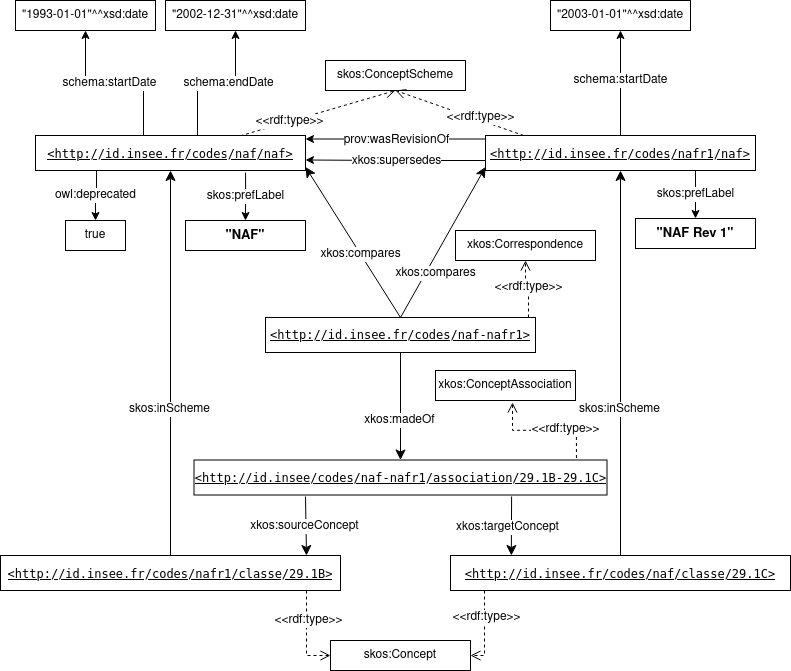

Copyright © 2022 The DDI Alliance, All Rights Reserved
(Authors affiliations were recorded at the beginning of the writing of this document and might have changed since.)
XKOS (An [[SKOS]] extension for representing statistical classifications) is a DDI Alliance Standard that defines terms that can be used for publishing statistical classifications as linked data. XKOS defines a vocabulary for representing classifications, as well as a general model based on SKOS and statistical business models. The XKOS specification provides some guidance on how to use the vocabulary, but it does not specify every implementation detail, so it was useful to complement it with a "best practices" guide.
The guide contains advice on how to use XKOS for maximum interoperability and reusability, and cover topics like the description of classifications (labels, explanatory notes, levels), the different types of correspondences, how to represent evolution over time of the different elements, how to publish statistical classifications as XKOS, what kind of descriptive metadata to attach in order to maximize findability, etc.
After a short reminder on statistical classifications, the guide proposes best practices regarding the representation of different elements: classifications and levels, labels and notes, classification items, correspondence tables and concepts associations, etc. Then, guidelines are suggested on specific aspects like the evolution of classifications in time and URI patterns for the identification of components. A number of examples are provided throughout the document to illustrate the best practices, including a comprehensive final example based on the ISIC classification.
Where appropriate, best practice rules are formalized in the [[SHACL]] validation language, so that publishers can check if their classifications conform to the guidance. These shapes are available as separate files (see the appendix).
The authors would like to thank the persons who provided suggestions and content through the XKOS GitHub issues, in particular Danny Delcambre from Eurostat (now retired).
The XKOS Best Practices provide a set of recommendations that are applicable to the publication of statistical classifications on the Web using XKOS. The publication of statistical data is out of scope of this document.
Interoperability is especially important because classifications are often organized in global systems with articulation between worldwide classifications (e.g. UN) and national classifications, with sometimes intermediate levels (e.g. Europe). Also, classifications of different domains can be connected (e.g. activities and products, see for example the international system of classifications on economic activities, products and goods mentioned below). Finally, temporal interoperability is also primordial.
By providing implementation guidelines for the practical use of XKOS, our main goals are:
The intended audience of this document is statistical agencies or other publishers of statistical classifications or correspondence tables between classifications, as well as users of these artifacts.
Statistical agencies will be particularly interested in how to represent classifications and correspondence tables, versioning policies, how to link classifications and major versions, how to structure the explanatory notes, etc.
Publishers of statistical classifications will be particularly interested in the descriptive metadata to describe statistical classifications.
Users of statistical classifications will be mostly interested in how to find classifications and tables, how to explore them, understand, use and query the data.
This document contains best practices organized in the following sections:
The vocabularies used in this document are listed in the table below, with their namespaces and associated prefixes.
| Prefix | URI | Description |
|---|---|---|
| xkos | http://rdf-vocabulary.ddialliance.org/xkos# | SKOS extension for representing statistical classifications ([[XKOS]]) |
| dc | http://purl.org/dc/elements/1.1/ | Dublin Core Metadata Element Set, Version 1.1 ([[DC11]]) |
| dcat | http://www.w3.org/ns/dcat# | Data Catalog Vocabulary (DCAT) - Version 2 ([[DCAT]]) |
| dcterms | http://purl.org/dc/terms/ | Dublin Core Metadata Initiative Metadata Terms ([[DC-TERMS]]) |
| eli | http://data.europa.eu/eli/ontology# | European Legislation Identifier ontology ([[ELI]]) |
| ex | http://example.com/ns# | Fictitious namespace used for exemples in this document. |
| insee | http://rdf.insee.fr/def/base# | Ontology of France "Institut National de la Statistique et des Études Économiques" ([[INSEE]]) |
| iso-thes | http://purl.org/iso25964/skos-thes# | ISO 25964 SKOS extension ([[ISOTHES]]) |
| prov | http://www.w3.org/ns/prov# | The Provenance Ontology ([[PROV-O]]) |
| qb | https://www.w3.org/TR/vocab-data-cube/ | The RDF Data Cube Vocabulary ([[QB]]) |
| rdf | http://www.w3.org/1999/02/22-rdf-syntax-ns# | RDF 1.1 Concepts Vocabulary ([[RDF11-CONCEPTS]]) |
| schema | http://schema.org/ | Schema.org ([[SCHEMA]]) |
| sh | http://www.w3.org/ns/shacl# | Shapes Constraint Language ([[SHACL]]) |
| skos | http://www.w3.org/2004/02/skos/core# | Simple Knowledge Organization System ([[SKOS]]) |
| skosxl | http://www.w3.org/2008/05/skos-xl# | SKOS eXtension for Labels (SKOS-XL) ([[SKOSXL]]) |
The RDF examples are expressed with the Terse RDF Triple language (Turtle) [[TURTLE]]. Individual resource names used as examples in the `ex:` namespace are entirely fictious.
For a general understanding of statistical classifications and their specificities, readers should refer to chapter §2.1 “Understanding statistical classifications” of the XKOS standard. The paragraphs below complements this general introduction with further details on the actors publishing or using statistical classifications, the revision and versioning mechanism, and the articulation between international and national classifications.
The rate at which classifications are revised must strike a balance between the stability of the classification over time to allow for analyses and adaptation to changes in the field of study. Thus, the lifespan of a classification is typically several years; the HS (Harmonised Commodity Description and Coding System) nomenclature, for example, is revised every five years.
As can be seen in the diagram in Figure 1, classifications should ideally be interoperable between domains and between geographical scales. Therefore, revisions can be coordinated to ensure that all classifications can remain consistent.
We make a distinction between revisions of statistical classifications and the versioning of the descriptive notes within a major revision.
Revisions of a classification include major changes resulting from upstream expertise in order to provide an updated analysis grid to better reflect the reality of the domain of interest.
Between revisions, although classifications are relatively stable resources, changes can be made to the elements, and typically to their definitions. To this end, the versioning of statistical classification is targeting the various notes that define the items. At the level of the classification itself, these minor changes do not result in a version number increment.
As a consequence of the considerations above, this best practice document and the examples given assume that, when a new revision of a statistical classification is created, it is a totally different "artifact" than the previous revision, hence with a different URI; and all classification items inside it will be assigned new URIs. This is reflected in section "Major versions of classifications" below, in the examples of correspondence tables in section "Examples of xkos:ConceptAssociation", and in the proposed URI patterns.
At the United Nations (UN), statistical activities are carried out by the United Nations Statistics Division (UNSD). The Division compiles and disseminates global statistical information, develops standards and norms for statistical activities, and supports countries' efforts to strengthen their national statistical systems. It facilitates the coordination of international statistical activities and supports the functioning of the United Nations Statistical Commission as the apex body of the global statistical system.
In particular, the UNSD is the repository of the main international classifications such as ISIC, CPC, SITC, BEC and COICOP.
At the European level, Eurostat coordinates the consultation of Member States and establishes a timetable for the joint revision or updating of classifications. Eurostat offers a variety of information in paper, electronic and online formats, e.g. RAMON, the Eurostat metadata server.
Although the UNSD classifications mentioned above are only implemented as recommendations, the classifications at European level are implemented legally to ensure their adoption by the Member States. For instance in the CPA 2008 Guidelines, we can read that The CPA is the European version of the CPC, and the purposes it serves are in line with those of the CPC. Whilst the CPC is merely a recommended classification, the CPA is legally binding in the European Union. In addition, specific survey classifications must be linked to the CPA, unless the CPA itself is used as a survey classification.
The [[[#fig-int-syst-eco]]] below gives an overview of the relationships between the classifications both between domains and between geographical scales. International classifications are usually derived at national level to take account of local specificities.
For instance with CPA classification, The CPA Regulations allow Member States to use a national version derived from the CPA for national purposes. Such national versions must, however, fit into the structural and hierarchical framework of the CPA in accordance with the following rules:
The European Commission is required to verify the conformity of the national classifications with these rules.
International classifications can be applied according to regulations or gentlemen's agreements. This procedure ensures that data are comparable between countries. However, for national publications, countries may use a different, nationally adapted version of a classification.
The Eurostat “Statistics Explained” web site describes the articulation between economic classifications at the international and national levels. The overview figure is reproduced below:
The diagram above shows that the aim is to ensure consistency between classifications, whether between world classifications or between geographical levels, either by establishing correspondence tables or by maintaining the same structure between two neighbouring classifications. As an example, the ISIC classification is derived at the European level through the NACE. ISIC (International Standard Industrial Classification of all Economic Activities of the United Nation) is the reference classification and NACE has the same structure. The first two levels are identical between NACE and ISIC, while levels three and four are subdivisions of the corresponding levels of the ISIC classification. The codes between these two classifications are as far as possible the same. To distinguish between them the representation is slightly different, with the insertion of intermediate points in the notation of the NACE codes.
The CPA is a product classification whose elements are related to activities as defined by NACE Rev. 2. Each product in CPA - whether it be a transportable or a non transportable good or a service - is assigned to one single NACE Rev. 2 activity. The linkage to activities as defined by NACE Rev. 2 gives the CPA a structure parallel to that of NACE Rev. 2 at all levels distinguished by NACE Rev. 2. However, the detailed linkage between products and activities could only be established to a certain degree. There are, nevertheless, cases where products can be assigned to activities only at a higher level than the class level or even where a class in CPA 2008 has no activity counterpart in NACE Rev. 2.
The relation between HS and CN is another example of one classification that is an extension of the other by bringing a lower level of description. HS (for Harmonized commodity description and coding System) is created for the classification of products. This international classification is used by most of the countries in the world. At the international level, the Harmonized System for classifying goods is a six-digit code system at its lowest level.
The CN, for Combined Nomenclature, is defined at the European level and proposes two additional digits, and works as a fourth level added seamlessly to the three first levels of HS.
The International Standard Classification of Occupations (ISCO) belongs to the international family of economic and social classifications. ISCO is a tool for organizing jobs into a clearly defined set of groups according to the tasks and duties undertaken in the job. Its main aims are to provide:
ISCO-08 is a four-level hierarchically structured classification that allows all jobs in the world to be classified into 436 unit groups. These groups form the most detailed level of the classification structure and are aggregated into 130 minor groups, 43 sub-major groups and 10 major groups, based on their similarity in terms of the skill level and skill specialization required for the jobs. This allows the production of relatively detailed internationally comparable data as well as summary information for only 10 groups at the highest level of aggregation.
ESCO, that stands for European Skills Competencies, qualifications and Occupations, is linked to the ISCO classification, one occupation of ESCO corresponds to only one poste of ISCO. ISCO provides the top four levels of the occupation classification. The occupations are linked to only one unit group of ISCO classification.
In this case the european classification is an extension of the international classification by adding a new level specific for the european union. As a consequence, it is possible that some ISCO’s unit group stay without link to ESCO occupations for job that doesn’t exist in Europe.
Correspondence tables provide a means to relate statistical classifications. There are 3 different use-cases for these correspondence tables:
CPA is the European counterpart of CPC, although the components of CPA are in a different structural order. CPC structures products based on the physical properties and the intrinsic nature of the products as well as on the principle of industrial origin; the CPA has the same criteria but gives first priority to industrial origin.
The classes of the CPA are based on several other classifications: CPC, HS/CN and ISIC/NACE determine the borders of the CPA subcategories. The main principle for classifying products in the CPA is the industrial origin criterion. Each product - whether it be a transportable or a non-transportable good or a service - is assigned to one - and only one - NACE activity at the most detailed level, namely the NACE class that characteristically produces the product. Thus, classifying products according to industrial origin gives the product classification a different structure to that found in CPC: namely a structure which is parallel to that of NACE Rev. 2.
Prodcom stands for "PRODuction COMmunautaire". This classification provides statistics on the production of manufactured goods by enterprises on the national territory of reporting countries. Prodcom . It covers mining and manufacturing: sections B and C of the statistical classification of economic activities in the European Union (NACE Rev. 2). Prodcom statistics aim to provide a comprehensive picture at EU level of the development of industrial production for a given product or sector, so that comparisons can be made between countries.
The scope of ProdCom is thus different, and smaller, from the one of CPC, and there is a correspondence table to that subpart of the CPC.
Since its creation, the NAF has been revised twice. The current version of the nomenclature is NAF rev.2, in force since 1 January 2008. It succeeded NAF rev.1, in force from 1 January 2003 to 31 December 2007.
The objectives of the revision were to modernise, in order to better reflect the economic developments of the last twenty years, and to improve the comparability of the major classification systems used worldwide, in order to facilitate international comparisons of economic data. Two correspondence tables have been produced, one for the transition from NAFrev1 to NAFrev2, the other for the reverse path. The links are documented in this correspondence table, so that partial links are used when an association to an item in the new nomenclature concerns only a part of this item. The link documentation also highlights whether the link relates to the core content of the item or the additional content. In addition, exclusion links are created to indicate which parts of the item are not retained. Finally, additional information is provided to show whether the item remains unchanged between the two classifications or, on the contrary, whether it has been split into n items in the new classification.
§5.1 of the XKOS specification states that
“In order to represent classifications and classification schemes, XKOS does not define specific classes but uses directly SKOS classes, adding to them different properties that specifically apply to classifications or classification schemes. Each major version of a classification is represented in XKOS by a `skos:ConceptScheme`.”
This best practices document gives further recommendations on how best to describe a `skos:ConceptScheme` that identifies a statistical classification, with mandatory, recommended and optional properties. Note that some constraints impose the presence of a property in English, hence the "lang" column with value "en" for certain properties
| Property | Lang. | Card. | Range | Description |
|---|---|---|---|---|
| Mandatory properties | ||||
| `skos:notation` | 1..1 | `xsd:string` | The value must be the short name of the classification, with no language tag. | |
| `skos:prefLabel` | en | 1..1 | `rdf:langString` | The value must be the complete name of the classification scheme in english. |
| `dcterms:issued` | 1..1 | `xsd:date` | The value must be the publication date of the classification scheme | |
| Recommended properties | ||||
| `skos:prefLabel` | any language | 0..n | `rdf:langString` | The value must be the complete name of the classification scheme in another language than english, with a proper language tag. |
| `dc:description` | en | 0..1 | `rdf:langString` | The value must be a short descriptive text about the classification scheme in english. |
| `skos:scopeNote` | en | 0..1 | `xkos:ExplanatoryNote` | The explanatory note must have a `xkos:plainText` property which value is a long descriptive text about the classification scheme in English, with a language tag set at ‘@en’ |
| `skos:hasTopConcept|^skos:topConceptOf` | 0..n | `skos:Concept` | Reference to a top-level classification entry of this classification. Top level entries can be indicated either from ConceptScheme to root Concepts, using `skos:hasTopConcept`, or from root Concepts to ConceptScheme, using `skos:topConceptOf`. | |
| `dcterms:modified` | 0..1 | `xsd:date` | The value must be the last modification date of the classification scheme. | |
| `dcterms:creator` | 0..n | `dcterms:Agent` | An agent responsible for creating the classification scheme. Note that the property can also be attached on the classification resource, as all versions of a classification are usually created by the same agent. | |
| `schema:startDate` | 0..1 | `xsd:date` | Begin date of the temporal validity of the classification. Readers interested in the rationale for the choice of schema.org properties can read the appendix. | |
| `schema:endDate` | 0..1 | `xsd:date` | End date of the temporal validity of the classification. Readers interested in the rationale for the choice of schema.org properties can read the appendix. | |
| `xkos:belongsTo` | 0..1 | `skos:Concept` | Connects a major version of a classification to a concept representing the overall classification. | |
| `xkos:levels` | 0..1 | `rdf:List` | Lists the classification levels represented as an RDF list of ordered levels (instances of `xkos:ClassificationLevel`). | |
| `xkos:covers` | 0..1 | `skos:Concept` | The domain covered by the classification or its levels (eg. activities, products, etc.). Subproperties `xkos:coversExhaustively` and `xkos:coversMutuallyExclusively` can also be used. | |
| `xkos:coversExhaustively` | 0..1 | `skos:Concept` | The domain covered by the classification (exhaustive coverage). | |
| `xkos:coversMutuallyExclusively` | 0..1 | `skos:Concept` | The domain covered by the classification (mutually exclusive coverage). | |
| `xkos:numberOfLevels` | 0..1 | `xsd:integer` | Depth of a classification (number of hierarchically imbricated levels) ; 1 for a flat classification. | |
| `xkos:follows` | 0..1 | `skos:ConceptScheme` | Links major revisions of classifications. | |
| `xkos:supersedes` | 0..1 | `skos:ConceptScheme` | Links major revisions of classifications, when the new one obsoletes the old one. | |
| Optional properties | ||||
| `xkos:variant` | 0..n | `skos:ConceptScheme` | Connects a classification scheme to its variant(s) | |
| `skos:scopeNote` | any language | 0..n | `xkos:ExplanatoryNote` | Each explanatory note must have a `xkos:plainText` property which value is a long descriptive text about the classification scheme in another langage than english, with the langage tag set appropriately |
| `skos:altLabel` | any language | 0..n | `rdf:langString` | An alternative appelation to refer to the classification scheme. |
| `dcterms:language` | 0..n | `xsd:language` | Indicates the langage coverage of the classification scheme. Each value must correspond to a possible langage of labels within that classification. | |
| `dcterms:license` | 0..1 | `dcterms:LicenseDocument` | The URI to the legal document giving official permission to do something with the classification. | |
| `owl:deprecated` | 0..1 | `xsd:boolean` | Indicates the classification is no longer active and has been superseded by a new revision. | |
| `eli:based_on` | 0..n | `rdf:Resource` | Legislation on which the nomenclature is based. Use of an ELI URI is preferred, if one is available ([[ELI]]) | |
| `rdfs:seeAlso` | 0..1 | `owl:Class` | A reference to a subclass of `skos:Concept` that is used as the class of all classification items in this classification (see below the best practice Type the classification items of a given classification) | |
The above table is formally encoded in a set of [[SHACL]] constraints, documented in the appendix.
Statistical classification often make use of different types of labels for their items. Two examples taken from French classifications can be mentioned:
In these and other similar cases, it is recommended to use alternative labels (`skos:altLabel`), and if necessary the SKOS-XL extension of SKOS. However, SKOS specifies a number of integrity rules that must be respected:
The first rule implies in particular that preferred and alternative labels cannot have the same value.
These rules extend to SKOS-XL labels through a mechanism explained in the SKOS Reference. So, for example, a `skosxl:Label` attached to an item by the `skosxl:altLabel` predicate cannot have the same literal form value as a plain SKOS preferred label.
This best practices document gives further recommendations and examples on how best to deal with fixed-length labels, translations, or labels in a specific context/usage.
§ 8.1 of the XKOS specification describes how to use SKOS labels in combination with `xkos:maxLength` to render fixed-length labels. Another example taken from the NAF rév. 2 (“Nomenclature d'activités française”) is given below:
Official labels should always be represented by the `skos:prefLabel` property. For usual labels, `skos:altLabel` should be used, but only when they are different from the official ones, due to the SKOS integrity rules.
For example, the French “Nomenclature des professions et catégories socioprofessionnelles 2020” (PCS2020) distinguishes “official” and “usual” labels:
In the first example above, the official and usage labels are different, so `skos:altLabel` can be used to express the usage label. In the second example, the usage label is the same as the official one, so `skos:altLabel` cannot be used since `skos:prefLabel` and `skos:altLabel` are disjoint properties. `skos:prefLabel` represents both the official and usage labels.
If more than one type of “unofficial” labels exist, SKOS-XL constructs can be used, in the same way than for the fixed-length labels example. In this case, the `skos-xl:Label` can be qualified by a custom property listing the different types of labels. The current version of XKOS does not define this kind of property.
Classification publishers should always provide textual material (labels and notes) in their original language. Additionally, it is recommended to publish English versions of at least the official labels and if possible of other labels and of all notes.
RDF native support of multilingualism should always be used:
§8.2 of the XKOS specification describes the different types of content notes introduced in XKOS and mentions the `xkos:plainText` property as a way to capture the raw content of the note. This best practice document gives additional recommendations on how best to describe the note entity, how to handle note versioning and timestamps, and clarifies the difference between `xkos:inclusionNote` and `xkos:caseLaw`.
The tables given in this section are formally encoded in a set of [[SHACL]] constraints, documented in the appendix.
As indicated in the XKOS specification, and as a prerequisite for the versioning and timestamping of notes, instances of `xkos:ExplanatoryNote` should be used as value for the SKOS and XKOS note properties, and not literal values.
The instances of `xkos:ExplanatoryNote` should at least follow the structure given in the table below, in addition to other properties described below, depending if the note is timestamped or versioned.
| Property | Card. | Range | Description |
|---|---|---|---|
| `xkos:plainText` | 1..1 | xsd:string | The value of the note, in plain text (no HTML / XML markup). The literal is tagged with a proper language tag. |
| `dcterms:language` | 1..1 | xsd:language | The language code of the note. This is a repetition of the language tag of the `xkos:plainText` attribute, that makes it easier to query/select notes in a certain language. |
| `rdf:value` | 0..1 | rdf:XMLLiteral | If needed the value of the note containing HTML or XML markup. |
As indicated in the introductory paragraph about classification major revisions and versions, the notes are the information that have fine-grained versions between each major revision of a classification (any changes other than on the notes - moving a concept, renaming a concept, etc. - is supposed to happen in a new major revision, hence applies to a new Concept URI. See section Major versions of classifications).
We propose 2 different patterns of versioning for notes: versioning notes with a version number and a date range, and keeping the history of notes with a timestamp.
The first pattern to version notes implies that each new version of the note is given a version number and a date range. All notes, except `skos:changeNote` and `xkos:caseLaw` should follow this pattern: `skos:scopeNote`, `skos:definition`, `xkos:coreContentNote`, `xkos:additionalContentNote`, `xkos:exclusionNote`, `xkos:inclusionNote`. These notes should uses the properties listed in the table below.
| Property | Card. | Range | Description |
|---|---|---|---|
| `dcat:version` | 1..1 | xsd:int | The version number of the note. e.g. `"1"^^xsd:int`, `"2"^^xsd:int`, etc. Note that this version number will typically be used in the URI of the `xkos:ExplanatoryNote`. |
| `schema:startDate` | 1..1 | xsd:dateTime | The date from which this note content is valid. Readers interested in the rationale for the choice of schema.org properties can read the appendix. |
| `schema:endDate` | 0..1 | xsd:dateTime | The date until which this note content was (or will be) valid, indicating it was (or will be) replaced with another note with a different text, and its version number increased by 1. This property is not set in the case if there is no known end date. Readers interested in the rationale for the choice of schema.org properties can read the appendix. |
Given the versioning history of such notes, a client accessing a particular version of the classification might not be interested to know about the versioning history of all notes, and is only interested in the current state of each note.
The second pattern implies that the note is associated with a publication date, but no version number. This pattern applies to `skos:changeNote` and `xkos:caseLaw`. It will use the properties listed in the table below.
| Property | Card. | Range | Description |
|---|---|---|---|
| `dcterms:issued` | 1..1 | xsd:dateTime | The date at which the note was issued. Note that this date will typically be used in the URI of the `xkos:ExplanatoryNote`. |
Given the versioning history of such a note, a client accessing a particular version of the classification might be interested to have the full history of each value of the note.
When a framework classification is implemented it is generally accompanied by explanatory notes (represented using `skos:scopeNote` or its sub-properties). These explanatory notes can undergo some review procedures so that countries can provide feedback about their content. Once the new or updated/revised classification comes into force and for stability sake, the explanatory notes remain untouched until the classification is next revised or updated.
Questions about the explanatory notes are addressed to the custodians of the relevant classifications who then issue classification decisions after discussion with countries; these classification decisions are generally grouped under various names (e.g. "rulings", "classification decisions", "caselaws") and represented using the `xkos:caseLaw` property. When a framework classification is revised or updated theses caselaws are considered for inclusion in the official explanatory notes.
In other words, classification objects that were not explicitly described in the core content note nor in the additional content note are taken into account by adding a case law specifying the content not explained in the explanatory notes. As defined in Neuchâtel terminology model "case law refers to a ruling concerning the classification of certain statistical objects/units, which do not obviously fit into one category and are not clearly defined by explanatory notes".
§6 of the XKOS specification specifies how to describe the levels in a classification, and how the property `xkos:organizedBy` can be used to link a level in a (specific revision of a) classification to the generic `skos:Concept` describing the generic kind of items that this level regroups (e.g. the concept of an ISCO major group, of a NACE section, etc.).
We emphasize what XKOS already specifies:
We give additional best practices:
The XKOS specification does not define a specific class to represent classification items but rather directly relies on `skos:Concept`. This best practices document gives further recommendations on how the classification items can be typed according to their levels.
A best practice is to declare a new subclass of `skos:Concept` as the type of the classification items for a given revision of a classification. For example the class “ex:NACE-R2_Item” could be declared as a subclass of `skos:Concept` to represent the set of all items in the 2nd revision of the NACE classification. Introducing this class allows to constrain the range of certain properties on this class.
This new subclass of skos:Concept shall be linked to the skos:ConceptScheme with either of these 2 modelling patterns:
Class: ex:NACE-R2_Item
EquivalentTo:
skos:inScheme value ex:nace-r2
SubClassOf:
skos:Concept
While the first option is more direct and readable, the second one is more formal.
This new class is expected to be declared in the same file as the `skos:ConceptScheme` representing the classification.
Both these options are illustrated in the example below.
Note that items inside the classification are not expected to be explicitely typed with this new class; they should only be typed with `skos:Concept`. The declaration of this class is only useful so that it can be assigned as the range of some properties.
§6 of the XKOS specification describing classification levels states the following:
"In XKOS, a classification level is defined as a specialization of `skos:Collection` named `xkos:ClassificationLevel`. (...) Individual `skos:Concept` objects are related to the `xkos:ClassificationLevel` to which they belong by the usual `skos:member` property (going from the level to the classification item)."
In this best practice document we describe how to declare OWL classes that correspond to the set of items of the classification at each particular level. These classes are subclasses of the class that represent the set of all items of the classification, as described in previous section. The OWL classes link to their corresponding classification level with `rdfs:seeAlso`, and vice-versa : a classification level points to the corresponding class with the same predicate.
Declaring OWL classes corresponding to classification levels allows to refer to these classes in the signature (domain or range) of properties. A typical use-case is to indicate that a certain property can refer only to the items at one or more levels of a classification.
Following the example given above, the following levels of the NACE-R2 would each have a corresponding `owl:Class` declared as subclass of `ex:NACE-R2_Item`:
These classes would be declared as direct subclasses of `ex:NACE-R2_Item`, as the set of e.g. NACE sections is a subset of the set of all NACE items. However these classes would not be declared as subclasses of each other, as it is not true to state that e.g. the set of all NACE R2 divisions is a subset of all NACE R2 sections.
To capture the intent that instances of NACE R2 divisions are expected to be narrower concepts of instances NACE R2 sections, the classification levels are referenced in an ordered list by the `xkos:levels` property on the `skos:ConceptScheme`.
This is illustrated in the following example.
We note however one limitation to this approach : contrary to the class that represent the set of all items of the classification (`ex:NACE-R2_Item` in the example above), it is not easily possible to declare a formal OWL equivalence between the class that represent the set of items of a level and the corresponding `xkos:ClassificationLevel`. This is due to the fact that the `skos:member` link is expressed on the classification level and refers to the classification items, contrary to `skos:inScheme` that is expressed on the items and points to the classification. For this to be possible, an inverse of `skos:member` should be declared.
It is sometimes desirable to restrict the range of a property not to items of a particular classification, nor to items at a certain level in a certain classification, but either to a "branch" of the classification, or to a subset of the elements taken anywhere in the classification.
For the cases where it is known that the classification is "partitioned" in subsets that can be used independantly, the following modelling pattern can be applied : each "partition" is declared as a `skos:ConceptScheme`, linked to the main `skos:ConceptScheme` of the classification with a `dcterms:isPartOf`; and the `skos:Concept`s of the classification items have 2 `skos:inScheme` properties : one that refer to the main `skos:ConceptScheme`, and one that refer to the `skos:ConceptScheme` of their "partition". This pattern is typically applied for the modeling of micro-thesauri in large thesaurus.
The pattern described above of declaring an OWL class corresponding to the skos:ConceptScheme can be applied, but for the skos:ConceptScheme corresponding to a "partition". This is illustrated in the example below:
§7 of the XKOS specification introduces `xkos:Correspondence` and `xkos:ConceptAssociation`, amongst other terms, to model correspondences, conversion tables, mapping, concordance tables. This best practice document gives further details on how to document correspondences and concept associations, gives examples of how to describe a split or a merge of a concept, or more complicated cases (n concepts to m concepts), and gives precisions on how to deal with deleted or new items in the case a `xkos:Correspondence` is used to document the mapping between 2 revisions of a classification.
By convention, the source Classification in a correspondence is the ‘former’ one, and the target Classification is the ‘new’ one. Or in other words, the source is the classification whose items compose the domain of the correspondence relation and the target is the classification whose items correspond to the range of this correspondence relation.
As an additionnal information, it is also possible to use properties given by the [[PROV-O]] vocabulary, for instance `prov:wasDerivedFrom` to convey the fact that one classification is based on a previous one and have with it a common content (see below).
Works requiring classifications are numerous, and there may exist several correspondence tables between two given classifications, depending on the scope of the comparison, the used methodology, etc. Thus it is recommended to document the `xkos:Correspondence` with notes and other properties providing information concerning the creation context of these correspondence tables. The table below lists the mandatory and optional properties for this.
| Property | Lang. | Card. | Range | Description |
|---|---|---|---|---|
| Mandatory properties | ||||
| `skos:prefLabel` | en | 1..n | `rdf:langString` | A name given to the correspondence table in english. |
| `dcterms:issued` | 1..1 | `xsd:date` | The publication date of the correspondence table. | |
| Recommended properties | ||||
| `skos:prefLabel` | any language | 0..n | `rdf:langString` | A name given to the correspondence table in another language than english, with a proper language tag. |
| `skos:scopeNote` | en | 0..1 | `xkos:ExplanatoryNote` | A note concerning the type of use of this correspondence table, typically in the case where the correspondence covers only part of the classification. The explanatory note must have a `xkos:plainText` property with a language tag set at ‘@en’ |
| `dcterms:creator` | 0..n | `dcterms:Agent` | An agent responsible for creating the correspondence table. | |
| Optional properties | ||||
| `skos:scopeNote` | Any language | 0..n | `xkos:ExplanatoryNote` | A short descriptive text about the correspondance table in another language than english. The explanatory note must have a `xkos:plainText` property with a language tag set appropriately. |
| `dcterms:license` | 0..1 | `dcterms:LicenseDocument` | The URI to the legal document giving official permission to do something with the entire correspondence table. | |
| `rdfs:seeAlso` | 0..1 | `xkos:Correspondence` | Refers to another correspondence table based on the same classifications but with a different approach (e.g. reversing the role of the source and target classification). | |
| `xkos:weightedBy` | 0..1 | `qb:DataSet` | Refers to a matrix that contains the weights / ratios associated to each pair of mapped source and target concepts. | |
The above table is formally encoded in a set of [[SHACL]] constraints, documented in the appendix.
It is possible to have several correspondence tables based on the same source and target classifications that are created with different methodologies and thus give different views of the relation between the two classifications (e.g. if links are constructed automatically or if they are determined by expert judgement). It may therefore be necessary to store this information by associating with the mapping table a `prov:Activity` encompassing the creation steps followed.
The following table lists the optional properties that can be expressed on a `xkos:ConceptAssociation`
| Property | Card. | Range | Description |
|---|---|---|---|
| Optional properties | |||
| `skos:scopeNote` | 0..n | xkos:ExplanatoryNote | Note concerning the sub-field outlined by this concept association, with a maximum of 1 note per language. |
| `dcterms:description` | 0..n | xkos:Correspondence | Note concerning significant changes between former and updated concepts included in the concept association, with a maximum of 1 note per language. |
The above table is formally encoded in a set of [[SHACL]] constraints, documented in the appendix.
It is possible to further describe concept associations with custom properties. INSEE for example uses `insee:differenceNote` and `insee:similarityNote` to capture respectively how the related items differs and how they are similar, as in the following example:
Examples below are taken from the correspondence table between two successive versions of the french classification of occupations.
In the RDF snippet below, the two classifications pcsese1982 and pcsese2003 are typed as two `skos:ConceptScheme` and the correspondence table pcsese1982 - pcsese2003 is typed as a `xkos:Correspondence`.
This example shows a simple case where a single source concept is related to a single target concept.
In this case the `skos:Concept` 6742 from pcsese1982 gives two new items in the pcsese2003, the concepts indexed 671a and 671c. Note how a single `xkos:ConceptAssociation` is used, with one source and two target. The link between the `xkos:Correspondence` and `xkos:ConceptAssociation` is beared by the `xkos:madeOf` property.
Inversely, this example illustrates a merge of two concepts from the pcsese1982 into one concept in the pcsese2003. A single `xkos:ConceptAssociation` is used, with two sources and one target.
The example below gives an example of a n-m relation between the two classifications. This allows us to more directly identify the equivalence of the two sets of concepts that cover the same sub-field of interest but whose relations are tangled. The example below shows only the `xkos:ConceptAssociation`:
The description above is sufficient for mapping the source Concepts to the target concepts, and thus outlining the comparable set of concepts between the two classifications, but it doesn’t describe how these concepts are actually linked. For instance the source Concept 72.1 may be linked to only 2 of the 3 target concepts, and the use of `xkos:ConceptAssociation` as above doesn’t allow discriminating between these alternatives.
In order to be more accurate in this linkage definition one could be tempted to split the n-m `xkos:ConceptAssocation` in several 1-1 `xkos:ConceptAssocation`. However that solution is discouraged and not considered a good practice: if there is a decision to split a concept, then this decision needs to be documented on only one `xkos:ConceptAssociation`. Moreover, in the case of a split we would lose the information that the two target concepts originate from the same concept.
The alternative to capture this is to introduce a matrix based on the links from the source concepts towards the target concepts. This is described in another section below.
Between two classifications revisions, classification items can appear or be deleted to better represent the evolution of the field of interest covered by the classification. In this situation, the practice would be to use a `xkos:ConceptAssociation` without the source or the target to reflect respectively the creation or the deletion of a classification item between the revisions.
However, if the fields of two classifications partially overlap, e.g. if the field of one classification is a sub-field of the other, it is not recommended to use this technique. Although it is recommended that the mapping table exhaustively covers both classifications, in this case it is more relevant to use a correspondence table adapted to the current subfield.
Among the numerous kind of work involving classifications, we may have to apply distribution coefficients between the items of the initial (source) classification and those of the final (target) classification, for instance when we have to make economical estimations between two revisions of a classification, spanning different temporal periods.
To cope with this use case, as well as the use-case of the n-to-m concept association described above, it is possible to link the correspondence table with a matrix, expressed with the RDF Data Cube vocabulary [[QB]], that associates some values to each pair of associated source-target concepts. These values could be a percentage, a price, or a boolean to indicate whether the concepts are actually linked or not. These values are actually the measures of the observations in the data cube.
Note that multiple values can be associated with a single observation in this data cube matrix, to give for exemple values both in terms of number of employees and in terms of revenues.
One could see this matrix as a redundancy with the correspondence table. It is actually a different, complimentary point of view: while the correspondence table gives a “documentary” view, and an easy way to traverse from the source concept to the target concept, the matrix provides the statistical point of view, with the numbers or weights associated to each pair of related source-target concept.
It is suggested that a new property is introduced in XKOS to capture the link between a Correspondence table and its corresponding `qb:DataSet` that captures the weights. The suggested property is `xkos:weightedBy`, but it is not part of XKOS at the time of this writing. A more generic property like `dcterms:relation` can also be used by default.
The following example illustrates this suggested mechanism. Note how the correspondence table in this example, and the associated matrix, are defined only for a given `xkos:ClassificationLevel` in each of the compared classifications.
The following example illustrates a real example with a weighted correspondence table between NAF and NAFrev1 classifications.
When a complete revision of a classification happens, a new major version of a classification is produced.
It is recommended that all concepts and levels are recreated with new URIs in the new revision. Only the changes of notes should be allowed in fine-grained versions between each major revision of a classification, as described in section Versioning notes and timestamping notes.
The relation between the classification items of the two revisions is given by a correspondence table as presented in the corresponding section of this document.
As for the classification themselves, the `skos:ConceptScheme` of the former revision should have the property `owl:deprecated` set to “true” and its end of validity period set in the `schema:endDate` property. Links between successive revisions can be asserted between the `skos:ConceptScheme`s by using `xkos:supersedes`; this property conveys the idea that the classification being referred to is deprecated.
§5.1 of the XKOS Specification states
“Readers should also be aware that the Provenance Ontology, which was not available at the time of writing of this specification, introduces the related notion of "entity specialization" (`prov:specializationOf`). This can be an alternative approach for describing the versioning of classifications.”
The following table gives more details on how XKOS properties are related to [[PROV-O]]. The use of [[PROV-O]] properties in combination with XKOS properties is encouraged to promote wider interoperability of links between classifications.
| XKOS Property or Path | Alignement | PROV-O property |
|---|---|---|
| `xkos:supersedes` | `rdfs:subPropertyOf` | `prov:wasRevisionOf` |
| `xkos:follows` | `rdfs:subPropertyOf` | `prov:wasDerivedFrom` |
| `^xkos:variant` | `rdfs:subPropertyOf` | `prov:wasDerivedFrom` |
| `^xkos:targetConcept/xkos:sourceConcept` | `rdfs:subPropertyOf` | `prov:wasDerivedFrom` |
Note that in the case of a `xkos:variant`, the corresponding [[PROV-O]] property is `prov:wasDerivedFrom` instead of `prov:wasRevisionOf`. The existence of a variant does not imply the original version is deprecated. There will be an overlap between the validity time period of the variant version and the reference one.
Note also that no mapping is made between `xkos:belongsTo` and `prov:specializationOf` since the PROV property implies the entities are of the same nature, whereas the classification is a `skos:Concept` and the level a `skos:ClassificationLevel`.
The figure below presents the succession of two revisions of the NAF classification. The temporal periods of validity of each revision are given through the `schema:startDate` and `schema:endDate` properties. A possibility to clearly identify that the NAFRev1 is the obsolete version is to use the `owl:deprecated` property set to `true`.
In the `xkos:ConceptAssociation` the `xkos:sourceConcept` makes a reference to a `skos:Concept` belonging to the `skos:ConceptScheme` of the former classification while the `xkos:targetConcept` references a `skos:Concept` belonging to the (`skos:ConceptScheme` of) the new revision of the classification.
The relationship between a classification and its derivation is partly described by the correspondence table which, for a given level, maps the items of the two nomenclatures.
Specific information can also be expressed on the levels to characterise them in relation to each other. Thus, for some derivations an additional level is defined or the granularity of the level is finer, for example to provide more precision at national level. It is suggested that the relationship between the finer level of the derived classification and the more aggregated level of the reference classification be expressed with a `skos:broadMatch` predicate.
Below is an example where the level is thinner in the NACE compare to ISIC (NACE being an EU-level extension of the world-level ISIC classification).
XKOS does not propose a property to indicate that a (national) classification refines another (international) one. However, it would be possible to state a `prov:wasDerivedFrom` property on the concept scheme of the derived classification.
While the XKOS specification introduces useful properties to describe statistical classifications, it does not give recommendations on how to publish statistical classification data. This section explains how to use [[DCAT]] to describe and publish the datasets of statistical classifications and correspondences.
It is recommended to use DCAT V2 to describe and disseminate metadata associated with classifications.
Each revision of a classification should correspond to one `dcat:Dataset`. For instance, in the example below, the classification NAF Rev1 and NAF Rev2 are separated in distinct `dcat:Dataset`s with different version information. Each classification’s dataset belongs to a `dcat:Catalog`.
Each dataset should have downloadable files in the necessary formats for both human and machine agents. In particular, statistical classifications should be provided for download in an RDF file based on [[SKOS]] and [[XKOS]] vocabularies, containing the full content of the classification. In the example, CSV and RDF (SKOS) formats are provided. The `dcterms:conformsTo` property should be set to the URI of the [[XKOS]] vocabulary: http://rdf-vocabulary.ddialliance.org/xkos.
For practical reasons it is important to have direct access to the latest version of a classification for directly retrieving the updated notes. However, for reasons of nomenclature expertise it is also important to have access to changes in notes that have affected the nomenclature. It is therefore recommended to have access to the history of modifications of all notes within the revision of the classification included in a `dcat:Dataset`. These versions containing the history of all notes are considered as different distributions of the datasets. They should be described by specific properties. Here we use `rdfs:comment` for describing and discriminating the distributions, given a lack of other modeling alternatives in DCAT (as of september 2022; this was raised in this DCAT issue). Other information is given by the `dcterms:temporal` metadata that has a larger span for the distributions containing all the note changes.
Each correspondence table shall also be provided as a distinct Dataset in the catalog. This dataset can be linked with the dataset of the source classification and the dataset of the target classification with:
The example below presents the correspondence between Naf rev2 and Naf rev1 classification.
{scheme}://{authority}/{all_classifications}/{classification_naming_context}/{concept_scheme_id}
Where:
{scheme}://{authority}/{all_classifications}/{classification_naming_context}/{level}
Where:
{scheme}://{authority}/{all_classifications}/{classification_naming_context}/{level}/{concept_id}
Where:
{concept_URI}/{label_id_length_language}
Where:
{concept_URI}/{type_of_note}/{note_version}/{language}
Where:
{concept_URI}/{type_of_note}/{date}/{language}
Where:
{scheme}://{authority}/{all_correspondences}/{source_concept_scheme_id}-{target_concept_scheme_id}
Where:
{correspondence_URI}/{all_associations}/{source_concept_id}-{target_concept_id}
Where:
This appendix provides an XKOS example of the high-level structure of a classification, here ISIC.
Only two ISIC versions are shown: the latest (fourth revision, or Rev.4) and the previous one (update to the third revision, or Rev.3.1). They are represented as SKOS concept schemes and attached through the `xkos:belongTo` property to the ISIC classification itself represented as a `skos:Concept`, and Rev.4 `xkos:supersedes` Rev.3.1. Another concept scheme contains the different categories of items defined in the successive versions of ISIC (“major group” was used until the second revision). An `rdf:List` of levels (`xkos:ClassificationLevel`) is attached to each revision, and each level is linked to the relevant item category through the `xkos:organizedBy` property.
Copyright © 2021 The DDI Alliance, All Rights Reserved
http://www.ddialliance.org/
Content of this document is licensed under a Creative Commons License:
Attribution 4.0 International (CC BY 4.0)
This is a human-readable summary of the Legal Code (the full license).
http://creativecommons.org/licenses/by/4.0/
You are free to:
for any purpose, even commercially.
The licensor cannot revoke these freedoms as long as you follow the license terms.
Under the following terms:
Disclaimer
This deed highlights only some of the key features and terms of the actual license. It is not a license and has no legal value. You should carefully review all of the terms and conditions of the actual license before using the licensed material.
Creative Commons is not a law firm and does not provide legal services. Distributing, displaying, or linking to this deed or the license that it summarizes does not create a lawyer-client or any other relationship.
Legal Code:
http://creativecommons.org/licenses/by/4.0/legalcode
This document recommends properties to describe statistical classifications, their correspondence tables, or the notes within statistical classifications. These recommendations are formally encoded in two [[SHACL]] files :
It is suggested that users of the recommended and optional shapes file first merge it with the conformance shapes file to get a complete and consistent set of constraints.
We give pointers to possible SHACL validators in order to make use of these SHACL files:
This best practices document indicates that `schema:startDate` and `schema:endDate` should be used to express the temporal validity range of classifications and notes inside the classifications. In the course of its writing, we did however consider other modeling alternatives that we describe here, as well as why we rejected them: